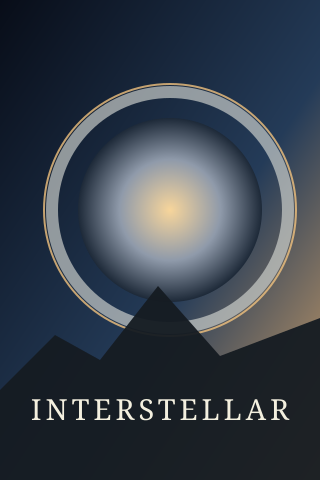
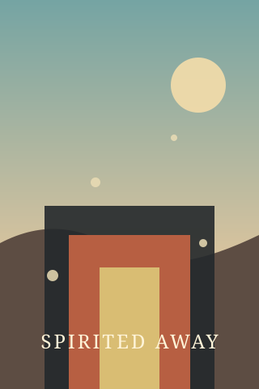

DISCOVER / HOME
Recommendation engine online
✦ YOUR PERSONAL CINEMA GUIDE
Find your next
great story.
Discover movies that fit your taste. Explore new worlds, revisit classics, and let the next watch find you.
30+CURATED FILMS
AISMART MATCHING
01YOUR NEXT FAVORITE


✦
Made for your tastePowered by content similarity
THE COLLECTION
Explore the library
Good films. Better rabbit holes.
⌕
Loading the collection…
A LITTLE ALGORITHM MAGIC
Find similar films
Choose a movie and let the model find its cinematic cousins.
SAVED FOR LATER
Your watchlist
Keep the good ones close.
Your watchlist is empty. Save movies from the collection to build it.